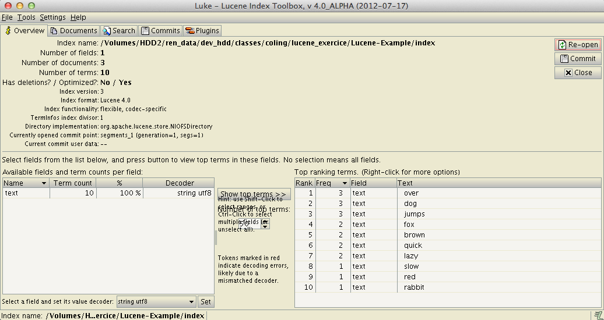
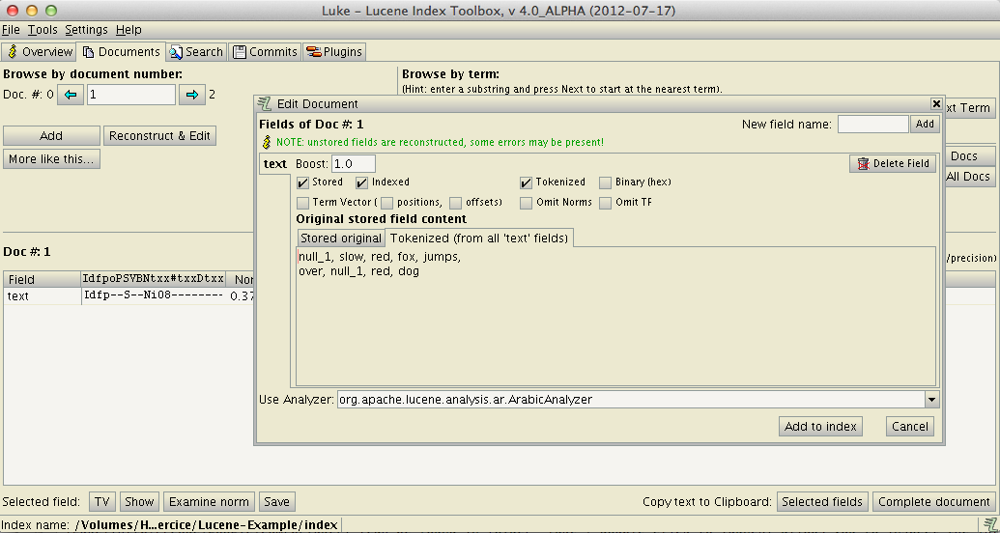
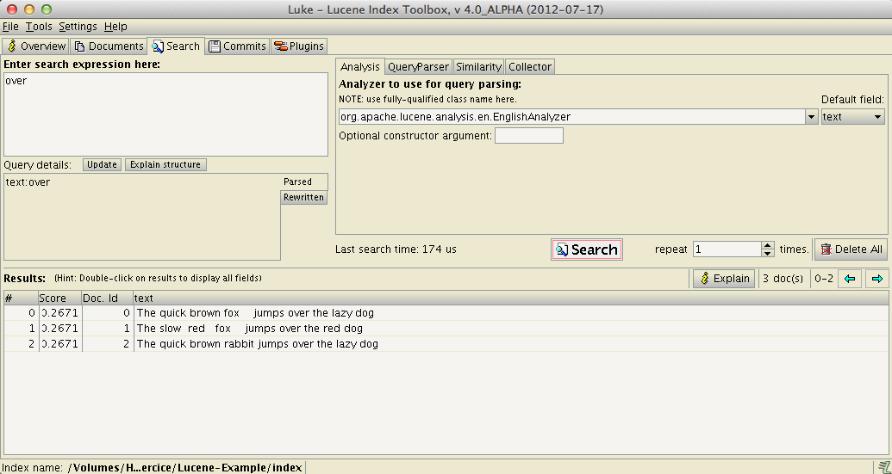

ch.epfl.coling.lucene.Indexer demonstate how to index text.
Further reading:
ch.epfl.coling.lucene.Searcher demonstate how to perform index search. You can test the query parser with the following queries:
jumpsjumjum* (wildcard search)jumsp jumsp~ (fuzzy searches based on Damerau-Levenshtein Distance)red fox"red fox" (phrase search)fox NOT red (boolean operators)Further reading:
Luke (can be found in folder luke, double click to launch) allows you to inspect the internals of a Lucene index.


DocumentsReconstruct & EditTokenized (from all 'text' fields)
SearchEnter search expression:: type overSearch buttonThe data folder contains a corpus of 25k sentences from biomedical articles (PMC). To index it:
index folderch.epfl.coling.lucene.Indexer line 43, call the function getText2() instead. AMPA, GABA (neurotransmitters)GABA receptor, "GABA receptor" ch.epfl.coling.lucene.Indexer.getAnalyzer() and modify the stopwords variable.